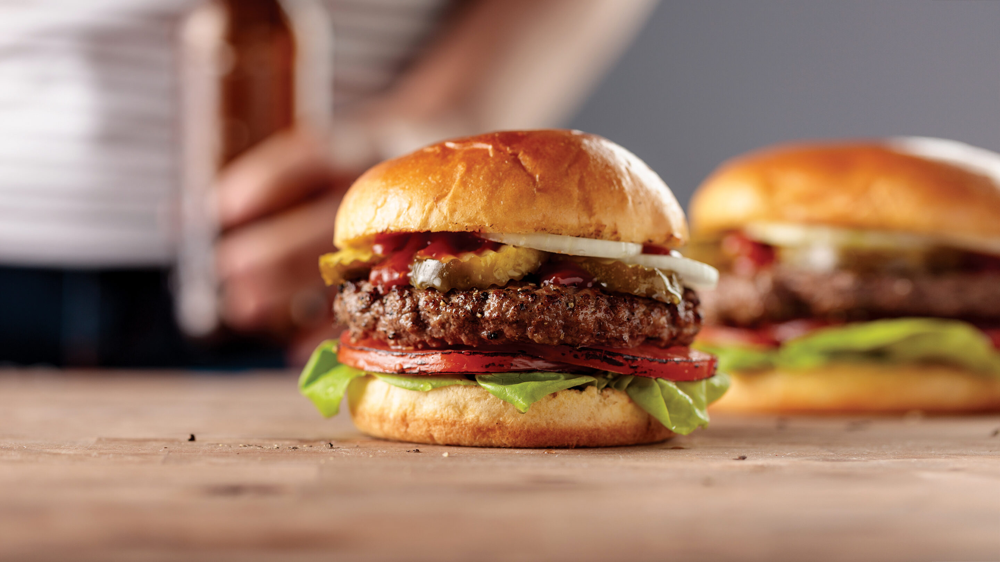

American Burger

Description
The recipe for Buffalo Chicken Quesadillas is super super simple.
Mix shredded chicken with buffalo wing sauce for spice, chopped green onions for zip,
then layer with shredded cheese between two gluten free tortillas. Brown, flip, BOOM. Time to eat!
Ingredients
- 1 pound ground beef
- 12 tablespoons finely chopped onion
- 2 tablespoons chili sauce
- 2 teaspoons Worcestershire sauce
- 2 teaspoons prepared mustard
- 4 slices American cheese or cheddar cheese, halved diagonally
- 2 teaspoons prepared mustard
- 2 slices Swiss cheese, halved diagonally
- 4 hamburger buns, split and toasted
- 2 Lettuce Leaves (optional)
- 2 Slices of Tomato (optional)
- 2 Strips Cooked Bacon (optional)
- Ketchup (optional)
- Mustard (optional)
Steps
- Combine 1 pound, 2 tablespoons finely chopped onino, 2 tablespoons chili sauce, 2 teaspoons Worcestershire sauce & 2 teaspoons prepared mustard
- Shape into 4 patties.
- Grill burgers, covered, on an oiled rack over medium direct heat until a thermometer reads 160° and juices run clear, about 6 minutes on each side.
- During the last minute of cooking, top each patty with 2 triangles American cheese and 1 triangle Swiss cheese.
- Serve on buns. As desired, top with lettuce, tomato, onion, bacon, ketchup and mustard.